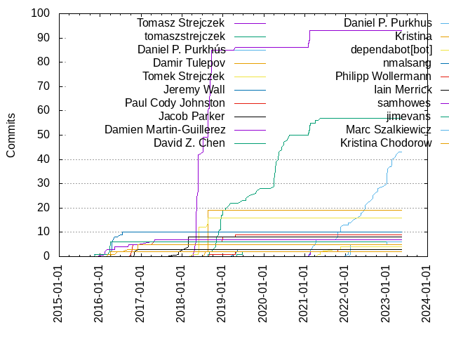

Authors
| Author |
Commits (%) |
+ lines |
- lines |
First commit |
Last commit |
Age |
Active days |
# by commits |
| Tomasz Strejczek |
93 (34.07%) |
16131 |
5497 |
2018-04-10 |
2021-02-11 |
1038 days, 6:50:31 |
36 |
1 |
| tomaszstrejczek |
57 (20.88%) |
160230 |
124088 |
2018-08-18 |
2021-05-18 |
1004 days, 0:22:47 |
50 |
2 |
| Damir Tulepov |
19 (6.96%) |
645 |
100 |
2018-08-02 |
2018-08-21 |
18 days, 20:17:07 |
4 |
3 |
| Tomek Strejczek |
16 (5.86%) |
1201 |
89 |
2018-04-10 |
2018-08-18 |
130 days, 5:59:02 |
6 |
4 |
| Jeremy Wall |
10 (3.66%) |
728 |
37 |
2015-11-09 |
2016-07-19 |
252 days, 21:51:04 |
9 |
5 |
| Paul Cody Johnston |
9 (3.30%) |
367 |
103 |
2016-09-28 |
2019-04-20 |
933 days, 10:19:40 |
7 |
6 |
| Jacob Parker |
8 (2.93%) |
124 |
67 |
2017-11-28 |
2018-02-28 |
92 days, 11:04:33 |
3 |
7 |
| Daniel P. Purkhús |
7 (2.56%) |
27635 |
15073 |
2021-02-11 |
2021-04-12 |
60 days, 0:54:01 |
7 |
8 |
| Damien Martin-Guillerez |
7 (2.56%) |
53 |
202 |
2016-02-09 |
2017-05-04 |
450 days, 8:24:07 |
7 |
9 |
| David Z. Chen |
6 (2.20%) |
590 |
306 |
2015-11-16 |
2016-04-04 |
139 days, 22:39:19 |
5 |
10 |
| Kristina |
5 (1.83%) |
16 |
11 |
2016-04-05 |
2016-12-02 |
240 days, 21:01:34 |
4 |
11 |
| nmalsang |
3 (1.10%) |
221 |
40 |
2019-04-09 |
2019-05-18 |
38 days, 17:23:17 |
3 |
12 |
| Iain Merrick |
3 (1.10%) |
76 |
12 |
2016-11-03 |
2016-12-02 |
28 days, 23:37:41 |
2 |
13 |
| samhowes |
2 (0.73%) |
151 |
69 |
2021-02-09 |
2021-02-21 |
12 days, 12:28:14 |
2 |
14 |
| jimevans |
2 (0.73%) |
25 |
12 |
2019-05-03 |
2019-06-25 |
53 days, 10:06:35 |
2 |
15 |
| dependabot[bot] |
2 (0.73%) |
2 |
2 |
2021-05-01 |
2021-05-19 |
18 days, 7:41:45 |
2 |
16 |
| Philipp Wollermann |
2 (0.73%) |
27 |
1 |
2018-09-04 |
2019-04-23 |
231 days, 5:04:18 |
2 |
17 |
| Kristina Chodorow |
2 (0.73%) |
485 |
40 |
2016-03-09 |
2016-04-04 |
26 days, 1:21:09 |
2 |
18 |
| Ilya Klyuchnikov |
2 (0.73%) |
7 |
7 |
2019-02-01 |
2019-02-01 |
0:00:43 |
1 |
19 |
| tomdegoede |
1 (0.37%) |
35 |
1 |
2020-01-08 |
2020-01-08 |
0:00:00 |
1 |
20 |
These didn't make it to the top: katre, Vladimir Moskva, Tor, Stewart
Henderson, Renovate Bot, Pierre Lulé, Mattias Granlund, Laurent Le Brun,
Justine Tunney, Joe Roberts, Jimmy Reichley, Jagoba Gascón, Helgevold
Consulting, LLC, Dmitry Lomov, David Chen, Carlos Cobo, Alexandr Lurye
Only top 20 authors shown

Only top 20 authors shown
| Month |
Author |
Commits (%) |
Next top 5 |
Number of authors |
| 2021-05 |
dependabot[bot] |
2 (66.67% of 3) |
tomaszstrejczek |
2 |
| 2021-04 |
Daniel P. Purkhús |
3 (60.00% of 5) |
tomaszstrejczek, katre |
3 |
| 2021-03 |
Tor |
1 (50.00% of 2) |
Daniel P. Purkhús |
2 |
| 2021-02 |
Tomasz Strejczek |
5 (35.71% of 14) |
tomaszstrejczek, Daniel P. Purkhús, samhowes |
4 |
| 2021-01 |
Tomasz Strejczek |
2 (50.00% of 4) |
tomaszstrejczek, Jagoba Gascón |
3 |
| 2020-08 |
tomaszstrejczek |
2 (66.67% of 3) |
Jimmy Reichley |
2 |
| 2020-07 |
tomaszstrejczek |
1 (50.00% of 2) |
Helgevold Consulting, LLC |
2 |
| 2020-06 |
tomaszstrejczek |
4 (100.00% of 4) |
|
1 |
| 2020-05 |
tomaszstrejczek |
4 (100.00% of 4) |
|
1 |
| 2020-04 |
tomaszstrejczek |
7 (100.00% of 7) |
|
1 |
| 2020-03 |
tomaszstrejczek |
4 (100.00% of 4) |
|
1 |
| 2020-02 |
Pierre Lulé |
1 (100.00% of 1) |
|
1 |
| 2020-01 |
tomdegoede |
1 (100.00% of 1) |
|
1 |
| 2019-11 |
tomaszstrejczek |
1 (100.00% of 1) |
|
1 |
| 2019-10 |
tomaszstrejczek |
2 (100.00% of 2) |
|
1 |
| 2019-08 |
tomaszstrejczek |
1 (100.00% of 1) |
|
1 |
| 2019-07 |
tomaszstrejczek |
1 (50.00% of 2) |
Joe Roberts |
2 |
| 2019-06 |
tomaszstrejczek |
1 (33.33% of 3) |
jimevans, Carlos Cobo |
3 |
| 2019-05 |
nmalsang |
2 (66.67% of 3) |
jimevans |
2 |
| 2019-04 |
nmalsang |
1 (25.00% of 4) |
Tomasz Strejczek, Philipp Wollermann, Paul Cody Johnston |
4 |
| 2019-03 |
tomaszstrejczek |
1 (50.00% of 2) |
Renovate Bot |
2 |
| 2019-02 |
Ilya Klyuchnikov |
2 (66.67% of 3) |
tomaszstrejczek |
2 |
| 2019-01 |
tomaszstrejczek |
1 (25.00% of 4) |
Stewart Henderson, Dmitry Lomov, Alexandr Lurye |
4 |
| 2018-12 |
tomaszstrejczek |
8 (72.73% of 11) |
Paul Cody Johnston, Laurent Le Brun |
3 |
| 2018-11 |
tomaszstrejczek |
3 (100.00% of 3) |
|
1 |
| 2018-10 |
tomaszstrejczek |
6 (100.00% of 6) |
|
1 |
| 2018-09 |
Tomasz Strejczek |
24 (92.31% of 26) |
tomaszstrejczek, Philipp Wollermann |
3 |
| 2018-08 |
Damir Tulepov |
19 (51.35% of 37) |
Tomasz Strejczek, Tomek Strejczek, tomaszstrejczek, Mattias Granlund
|
5 |
| 2018-07 |
Tomasz Strejczek |
7 (100.00% of 7) |
|
1 |
| 2018-05 |
Tomasz Strejczek |
37 (77.08% of 48) |
Tomek Strejczek |
2 |
| 2018-04 |
Tomasz Strejczek |
5 (83.33% of 6) |
Tomek Strejczek |
2 |
| 2018-02 |
Jacob Parker |
5 (100.00% of 5) |
|
1 |
| 2018-01 |
Jacob Parker |
1 (100.00% of 1) |
|
1 |
| 2017-11 |
Jacob Parker |
2 (100.00% of 2) |
|
1 |
| 2017-08 |
Vladimir Moskva |
1 (100.00% of 1) |
|
1 |
| 2017-05 |
Damien Martin-Guillerez |
1 (100.00% of 1) |
|
1 |
| 2017-04 |
Paul Cody Johnston |
1 (100.00% of 1) |
|
1 |
| 2017-03 |
Damien Martin-Guillerez |
1 (100.00% of 1) |
|
1 |
| 2016-12 |
Kristina |
2 (66.67% of 3) |
Iain Merrick |
2 |
| 2016-11 |
Iain Merrick |
2 (100.00% of 2) |
|
1 |
| 2016-10 |
Paul Cody Johnston |
4 (100.00% of 4) |
|
1 |
| 2016-09 |
Paul Cody Johnston |
1 (33.33% of 3) |
Kristina, Damien Martin-Guillerez |
3 |
| 2016-07 |
Jeremy Wall |
2 (66.67% of 3) |
Justine Tunney |
2 |
| 2016-05 |
Kristina |
1 (33.33% of 3) |
Jeremy Wall, Damien Martin-Guillerez |
3 |
| 2016-04 |
Jeremy Wall |
6 (60.00% of 10) |
David Z. Chen, Kristina Chodorow, Kristina |
4 |
| 2016-03 |
David Z. Chen |
3 (75.00% of 4) |
Kristina Chodorow |
2 |
| 2016-02 |
Damien Martin-Guillerez |
3 (100.00% of 3) |
|
1 |
| 2015-12 |
David Chen |
1 (100.00% of 1) |
|
1 |
| 2015-11 |
Jeremy Wall |
1 (50.00% of 2) |
David Z. Chen |
2 |
| Year |
Author |
Commits (%) |
Next top 5 |
Number of authors |
| 2021 |
tomaszstrejczek |
7 (25.00% of 28) |
Tomasz Strejczek, Daniel P. Purkhús, samhowes, dependabot[bot], katre
|
8 |
| 2020 |
tomaszstrejczek |
22 (84.62% of 26) |
tomdegoede, Pierre Lulé, Jimmy Reichley, Helgevold Consulting, LLC
|
5 |
| 2019 |
tomaszstrejczek |
9 (36.00% of 25) |
nmalsang, jimevans, Ilya Klyuchnikov, Tomasz Strejczek, Stewart
Henderson
|
13 |
| 2018 |
Tomasz Strejczek |
85 (56.67% of 150) |
tomaszstrejczek, Damir Tulepov, Tomek Strejczek, Jacob Parker, Paul
Cody Johnston
|
9 |
| 2017 |
Jacob Parker |
2 (33.33% of 6) |
Damien Martin-Guillerez, Vladimir Moskva, Paul Cody Johnston |
4 |
| 2016 |
Jeremy Wall |
9 (25.71% of 35) |
Paul Cody Johnston, Kristina, David Z. Chen, Damien Martin-Guillerez,
Iain Merrick
|
8 |
| 2015 |
Jeremy Wall |
1 (33.33% of 3) |
David Z. Chen, David Chen |
3 |
| Domains |
Total (%) |
| outlook.com |
97 (35.53%) |
| users.noreply.github.com |
71 (26.01%) |
| gmail.com |
22 (8.06%) |
| tulepov.com |
19 (6.96%) |
| google.com |
15 (5.49%) |
| marzhillstudios.com |
10 (3.66%) |
| pubref.org |
9 (3.30%) |
| solidangle.ca |
8 (2.93%) |
| kreditech.com |
7 (2.56%) |
| strejczek.name |
4 (1.47%) |